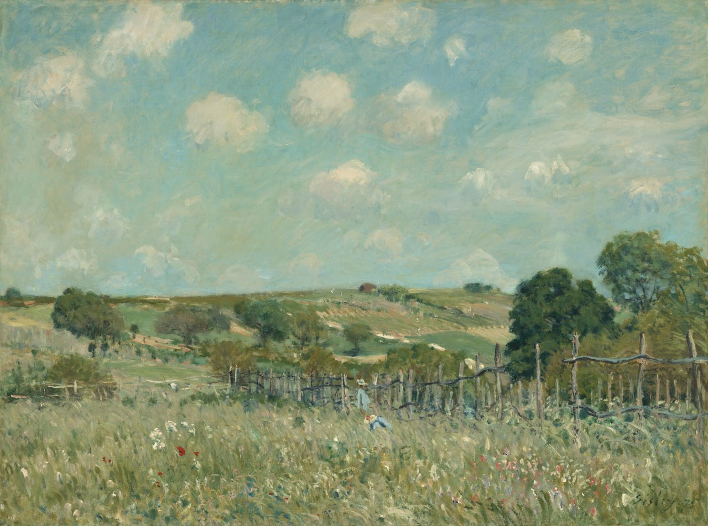

Альфред Сислей
La Prairie (Луг), 1875

Холст, масло, 54,9 x 73 см
Национальная галерея искусств, Вашингтон.
История картины
- Коллекция графа Armand-François-Paul des Friches Doria 1877 г.
- 1899, продажа Armand Doria, Париж, галерея Georges Petit 4 и 5 мая 1899 г., № 224
- куплена Durand-Ruel, Нью-Йорком и Парижем
- продан в 1900 г. в Bernheim-Jeune, Париж. Jules Strauss, Париж
- продажа Strauss, Hôtel Drouot, Париж, 3 мая 1902 г., № 60
- куплен Joubert, возможно, для галереи Georges Petit, Париж
- сенатор Antonio Santamarina, Буэнос-Айрес, в 1933 г.
- продана в 1957 г. галерее Wildenstein & Co, Нью-Йорк
- продана 4 октября 1957 года Ailsa Mellon Bruce, Нью-Йорк
- завещана в 1970 г. в пользу NGA. Луг, где растут травы, усеян цветами: маргаритками, маками, черникой. Там собрались две маленькие девочки в синих фартуках и соломенных шляпках с красными и синими лентами. Справа – деревянный забор, за которым несколько групп деревьев поднимают свою светлую листву. А дальше, до самого горизонта, простирается сельская местность, поля которой поднимаются по склонам холмов под голубым небом, окаймленным белыми облаками.